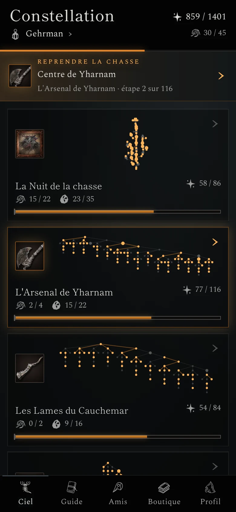

Projets
Des projets menés au bout : une équipe, des systèmes en production, des outils publiés.
-
PRJ-01 Image à générer · socle
La traduction comme travail d’équipe
Tableau de travail à trois colonnes (à faire, en relecture, livré) sans marque, plusieurs mains anonymes, un paquet scellé qui part vers un grand dépôt commun. Recadrage 4:5 sur mobile.
16:10 · 1600 × 1000
Mener une équipe
PvZ Fusion, pôle francophone
Rattraper, à plusieurs, la traduction française d’un jeu qui change toutes les deux ou trois semaines.
20contributeurs formés
- Rôle
- Lead du pôle, mainteneur du projet multilingue
- Statut
- En cours, bénévole
-
PRJ-02 Image à générer · socle
Une archive versionnée
Registre relié ouvert dont les pages sont des couches datées qui s’éventaillent, marque-page sur une page ancienne ; aucun personnage.
16:10 · repris par LOD-01
Un système en production
League Of Data Basenom à confirmer
Retrouver les valeurs exactes d’un ancien patch de League of Legends, dans sa langue.
403patchs, dans 21 langues
- Rôle
- Conçu et maintenu seul
- Statut
- En ligne
-
PRJ-03 Recadrage d’OMN-01
Du papier au jeu en ligne
Une carte plastifiée à la main qui devient numérique en franchissant le bord d’une fenêtre de navigateur. Face générique.
16:10
Inventer
Omnicard
Le jeu de cartes inventé sur papier avec mon cousin, devenu un jeu en ligne avec son moteur de règles.
3 moisde travail cumulé, environ
- Rôle
- Conception et développement
- Statut
- Hors ligne, en refonte
-

Un produit de bout en bout
Bloodborne Legendary Run
Ranger les objectifs d’une partie complète de Bloodborne en 22 constellations.
1 289objectifs
- Rôle
- Seul à confirmer
- Statut
- En ligne, web ; Android en test
-


Aussisélection à confirmer
-
GitHealth
Savoir quelles branches Git garder, revoir ou nettoyer, avec la raison de chaque verdict.
Le code -
Life Pixel
Un éditeur d’animations en pixel art qui exporte des lecteurs WebAssembly, avec un serveur MCP.
Le code -
img-convertor
Transformer un dossier d’images en variantes WebP ou AVIF adaptées à chaque largeur d’écran.
Le code -
Shreksophone
Un clic, et l’interface laisse place à Shrek au saxophone. Volontairement absurde.
La démo
Contribuer
Deux projets ouverts aux contributions, avec leur guide.
- gup Guide de contribution
- PvZ Fusion Console Manager Le dépôt et son guide